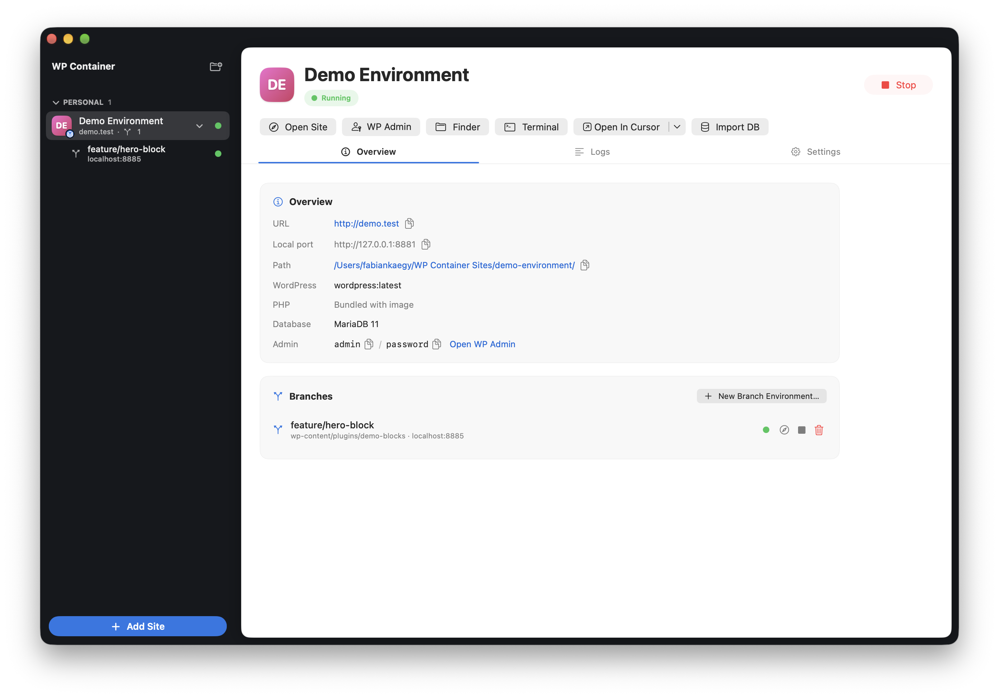
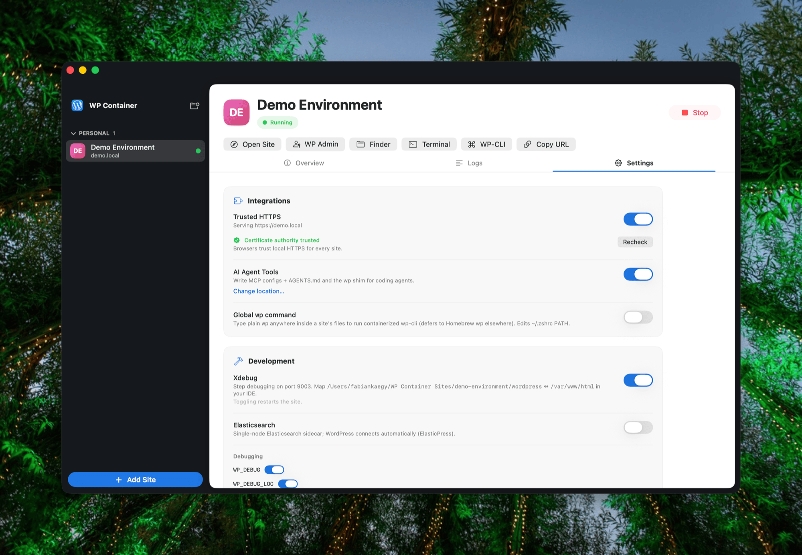

Branch environments
Spin up an isolated, running clone of a site for any git branch in ~5 seconds — APFS copy-on-write plus a git worktree, on its own port. The parent site keeps running untouched.
Spin up an isolated, fully-running clone of any site for any branch in about five seconds. A native SwiftUI app with an MCP server and JSON CLI built for AI coding agents.
git clone https://github.com/fabiankaegy/wp-container.git && make build
macOS 26 · Apple Silicon · Free & open source

One-click sites in a Studio-style UI, real files on disk, and the low-level power tools you actually reach for.
Spin up an isolated, running clone of a site for any git branch in ~5 seconds — APFS copy-on-write plus a git worktree, on its own port. The parent site keeps running untouched.
A bundled MCP server with 18 tools, auto-generated AGENTS.md, --json on every command, and a global wp router. Point Claude, Cursor or Copilot straight at a site.
The entire WordPress install lives in a normal folder on your Mac. Drop your git-managed wp-content plugin and theme repos straight in — they're live immediately.
A locally-trusted certificate authority — no admin password, Touch ID supported — serves real https:// for every site, with custom .local domains routed for you.
Toggle Xdebug and Elasticsearch per site, pick any WordPress × PHP combination, and create subdirectory or subdomain multisite networks from a guided flow.
A site is running in ~2–3 seconds. Each container is a lightweight VM, so stopped sites cost zero — no daemon idling in the background eating your RAM.
Every action WP Container performs is scriptable and returns clean JSON, so an agent can create a branch environment, run WP-CLI, read logs and check site health without a human in the loop.
wp_cli, log readers, wp-config editing, site health, start/stop, worktree_* and more..mcp.json (plus Cursor & VS Code configs) and a marked AGENTS.md block into your repo.--json everywhere and a global wp router so plain wp inside a site runs containerized WP-CLI.# spin up an isolated env for a feature branch
$ wp-container worktree create \
--site my-blog \
--repo wp-content/plugins/my-plugin \
--branch feature-x --json
{
"url": "http://127.0.0.1:8882",
"path": "~/WP Container Sites/my-blog-feature-x",
"worktreePath": "…/my-plugin (feature-x)"
}
# ↑ ready in ~5s — agent opens the URL and starts workingNo always-on daemon, no heavyweight VM. Each site runs in its own lightweight Apple container that starts fast and disappears when you stop it.
Create, start and open. Containers are ephemeral; all state lives in the site folder.
APFS copy-on-write clones the site instantly instead of copying gigabytes of files.
Stopped sites use no CPU and no memory. Stopping what you're not using is the only lever that matters.
A dark window shell with a light inset content panel, live status in the sidebar, and a menu-bar extra for one-glance control of every site.

macOS 26 on Apple Silicon, and Apple's container tool version 1.1.0 or newer (brew install container or the release installer). WP Container offers to start its system service for you on first launch.
Same friendly, one-click spirit — but WP Container is built on Apple's native container runtime rather than bundled binaries, so stopped sites truly cost nothing. It adds first-class git branch environments, real trusted HTTPS with custom domains, and a full CLI plus MCP server designed for AI coding agents. The complete WordPress install always lives in a plain folder you own.
There's no docker-compose.yml to write and no Docker Desktop running in the background. Each site is two lightweight Apple containers (WordPress + MariaDB) that the app provisions, labels and reconciles automatically. Containers are disposable; your files and database persist in the site folder.
In a normal folder — by default ~/WP Container Sites/<site>/. Inside it, wordpress/ is the entire host-visible WP install (mount your wp-content git repos into it), database/ holds MariaDB data that survives restarts, and a per-site wp shim runs WP-CLI in the container.
Yes — that's a core design goal. Run wp-container agent-tools enable to write MCP and IDE configs plus an AGENTS.md block into your repo. The MCP server exposes 18 tools, and every CLI command supports --json, so an agent can create environments, run WP-CLI, read logs and check health end to end.
Yes. WP Container is free and open source on GitHub. Download the latest release, or clone the repo and build it yourself with make build.
Free, open source, and ready for you and your AI agents.
macOS 26 · Apple Silicon · Apple container ≥ 1.1.0